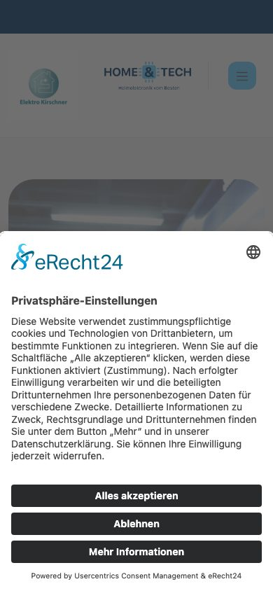
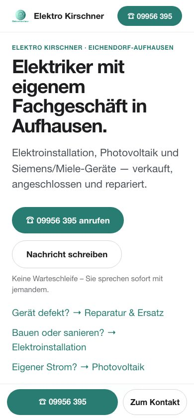
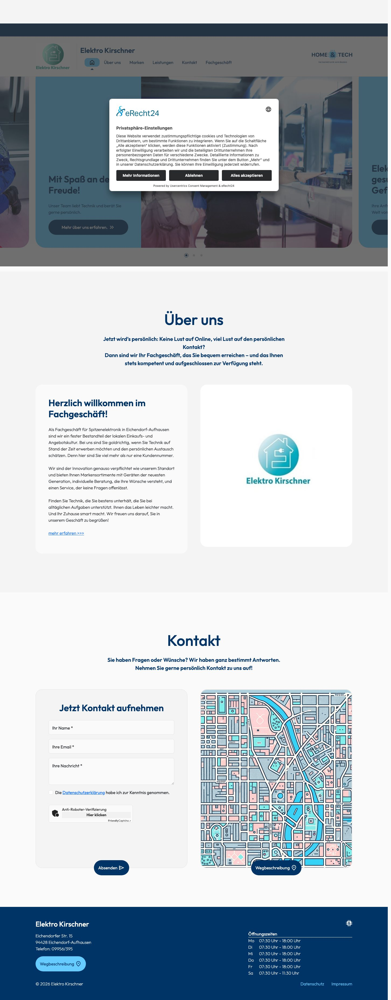
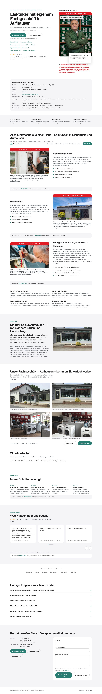

So sieht Ihre Seite auf dem Handy aus – wo die meisten Kunden suchen
Beides ist der allererste Bildschirm, den ein Kunde auf dem Handy sieht — ohne zu scrollen, ohne zu tippen.
Vorher

Das Erste, was ein Kunde sieht: ein Zustimmungsfenster über der ganzen Seite. Kein Name, keine Nummer, keine Leistung — und der fremde Markenname „Home & Tech" statt Elektro Kirschner.
Nachher

Das Erste, was ein Kunde jetzt sieht: wer Sie sind, was Sie tun — und zwei Knöpfe zum Anrufen. Kein Zustimmungsfenster nötig, weil die Seite nichts an Dritte weitergibt.
Die ganze Seite am Computer
Beide Startseiten in voller Länge, aufgenommen bei 1440 Pixel Breite.
Vorher

Aufnahme vom August 2026 — Vorlagen-Design unter fremdem Namen, austauschbare Symbolbilder, keine Bewertungen; Öffnungszeiten nur ganz unten im Fußbereich, per Skript eingeblendet.
Nachher

Die rot markierten Bilder sind Beispiel-Motive — sie werden durch echte Fotos aus dem Betrieb ersetzt (siehe Fotoliste).